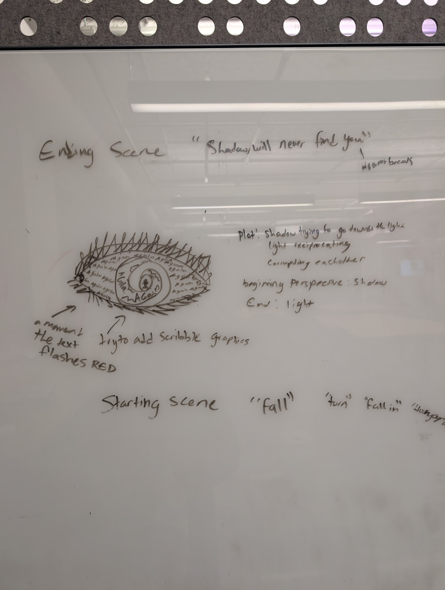
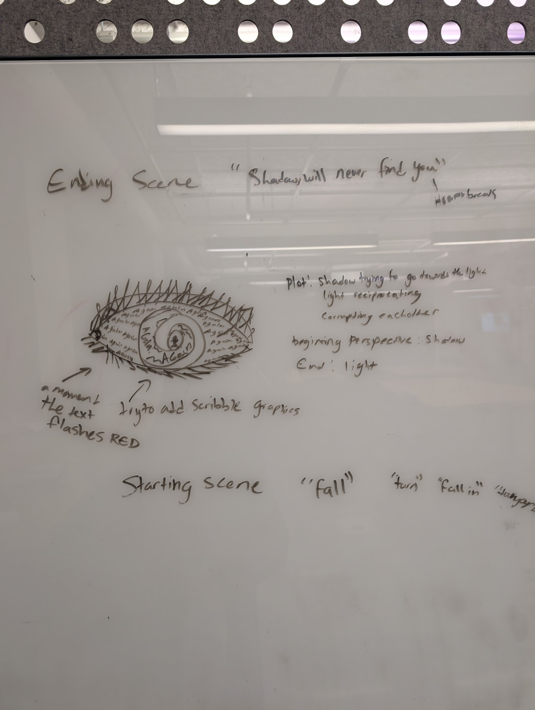

— PROJECT NAME : SHADOWS
Song Credit : Alina Kay
"Towards the Sun"
— ROLE : KYONA JOSEPH
Motion Designer
Animator
Video Editing
— DATE
November 2025
For this project I really aimed to create a emotionally moving video based on kinetic typography that merged the rhythm of the lyrics with the visual energy of the track. I was inspired to use this artists song because of how mystical it felt so I used the text to act as both the messenger and the visualizer through the art, creating a immersive animation of words that I aimed to invoke a powerful emotion within the viewer.
The process involved using Adobe Illustrator and procreate to draw and create the works within the piece. I then used Adobe AfterEffects to keyframe and animate many of the art in the video such as the eyeballs movement. In addition to rotoscoping for key animation. Along with creating water ripples and burn effects all within After Effetcs.
- Kinetic Typography/Animation
- VFX Visual Effects
- 2D Animation
- Storyboarding
- Keyframing Realistic Eye Movements in After Effects
- Human Falling Animation
- Hand Drawn Assets
Click videos for sound
Typography Choice
I chose the Ten O Clock font to match the overall agitated theme througout the project. I keyframed the font while using the typewriter preset to match the elongated notes of the singers voice.
Burning Hand Animation
In procreate I sketched out the silhoutte of a hands reaching towards eachother using references then animated the burning of the hands. I brought the video into AfterEffects then added a additional burning effect.
Falling Animation with Text
To create the falling animation of the person I rotoscoped a royalty free video for the movements. I then added black and white transparency in addition to laser beams whilst layering the movements to create a more dynamic falling effect simulating shadows. I animated text of the song lyrics to wrap around the body including hand drawn assets on the corners.
Process & Moodboard
 


Final Kinetic Animation